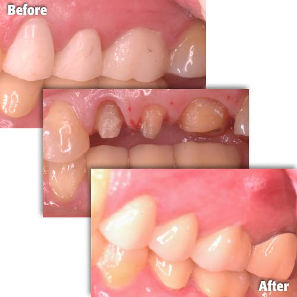
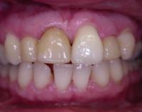
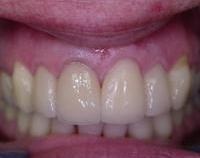
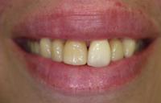
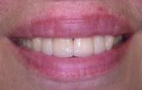

Functional Crown Lengthening: A tooth which is broken or decayed below the gum line is difficult, if not impossible, for your dentist to restore correctly, as access and visualization of the area is compromised. In addition, even the best filling or cap will trap bacteria where the restoration meets he tooth. If his area is below the gum line where you cannot properly clean it, the bacterial accumulation results in both periodontal problems and the formation of a new cavity at the base of the filling.
A crown lengthening procedure, which reshapes the gum and supporting issues, will solve theses problems. This will allow a final restoration to be placed in a healthy environment
Cosmetic Crown Lengthening: On occasion your dentist may require reshaping your gums to create symmetry in your smile, or to reduce a gummy smile or event expose more of your tooth to create a tooth hat looks more natural with your face and smile.

The old crowns failed because the teeth were too small to retain them. A functional result is obtained without sacrificing the appearance.
Whether you have crown lengthening to improve function or esthetics, patients often receive the benefits of both: a beautiful new smile and improved periodontal health - your keys to smiling, eating and speaking with comfort and confidence.
| Before | After |
|---|---|
|  |  |
|  |  |